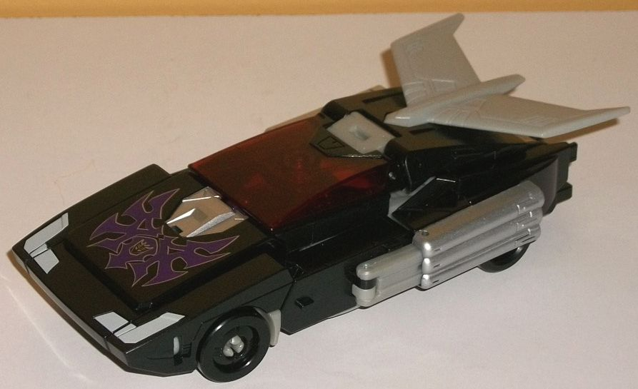
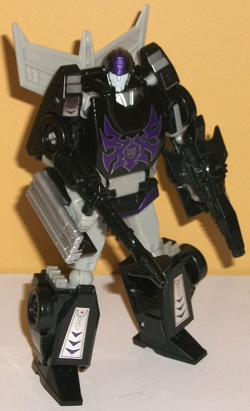
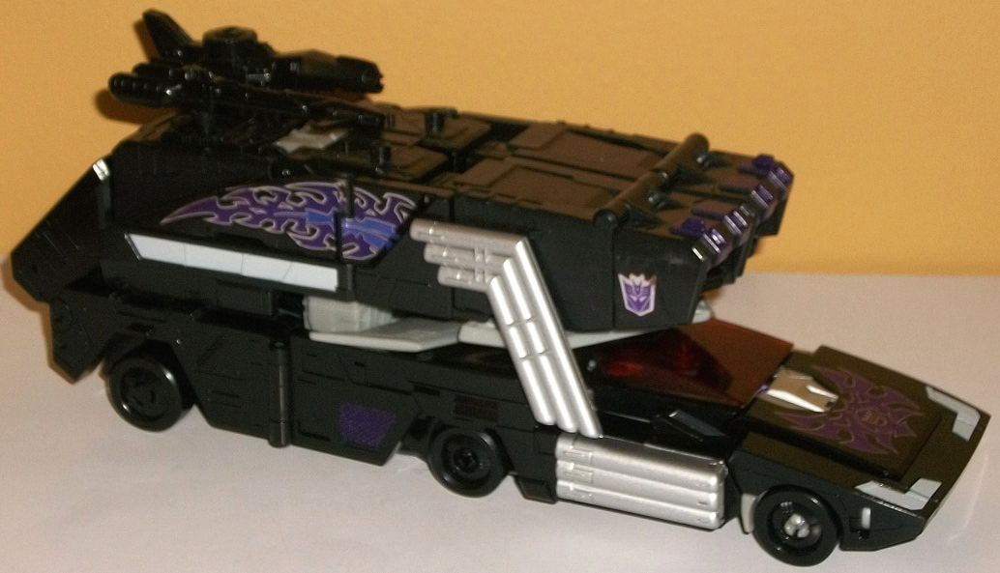
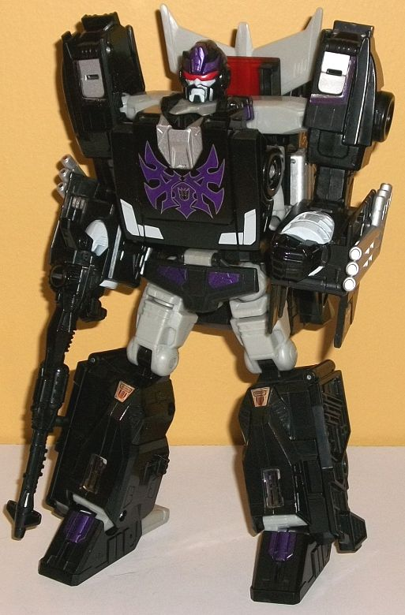

Allegiance
: Decepticon
Size
: Leader
Difficulty of Transformation to Nemesis
Hot Rod's Robot Mode
: Easy
Difficulty of Transformation to Rodimus
Unicronus' Robot Mode
: Medium
Color Scheme
: Black, light milky
gray, and some metallic dark purple, silver, cherry red, light glossy gray,
and transparent dull red
Rating
: 9.2
(NOTE: Because this is a repaint, this is not a full-blown review. This mainly covers any changes made to the mold and the color scheme, and merely compares it to Power of the Primes "Evolution" Rodimus Prime/Rodimus. For a review on the mold itself, read the review of PotP Rodimus Prime/Rodimus here .)


Well, here's an unexpected
redeco! Perhaps as a store exclusive I might have expected this, but a
mainline release-- at the
Leader class size
, no less-- of Hot Rod
in his
Shattered Glass deco
?! Super cool,
and one that this Transfan super-appreciates. It follows the source material
pretty closely for the most part, with the main colors being black and
gray. Unfortunately, the gray plastic used is a light milky gray, as opposed
to the more semi-metallic gray of the Botcon 2008 toy. However, the metallic
purple is a really rich, deep color, and pops EXTREMELY well against the
black in particular. As opposed to the more "gas-like" flames of the Botcon
toy, the metallic purple flames on this version of evil Hot Rod/Rodimus
are more angular than they traditionally have been, giving them almost
a "knife-like" edge. This wonderful shade of metallic purple isn't just
used on the chest flames for both modes, though-- it's also used on both
robot mode waists, both of their foreheads, and on Rodimus Unicronus' toes.
There's also some purple on the flames on those foil stickers used for
the flames on the vehicle mode trailer, and there's some more foil stickers
with some basic robotic details on them on the knees and lower Unicronus
feet, the upper Nemesis Hot Rod arms, the lower Nemesis Hot Rod feet, and
there's also Decepticon symbol stickers on the front top sections on the
trailer. Just as in nearly every case, I find the foil stickers a bit cheap-looking,
and just like with the Rodimus Prime/Hot Rod toy this was repainted from,
the stickers can unfortunately crease a bit around the area where the trailer
folds apart at the top, ruining some of those flames. Red is also used
as an accent color-- a dull transparent shade of it is used for the window
of the vehicle modes, and it's also used for the "Matrix of Chaos" Rodimus
Unicronus carries within his chest (mostly painted over with black and
metallic purple). The eyes of both of the robot modes are a cherry red,
and both just beam with evil-- both shades of red are pretty ominous colors.
Beyond simply the milky gray plastic interspersed between the black plastic
bits, there's also some glossy light gray paint used around the Unicronus
fists, on both of the robot faces, on the headlights, and on a stripe section
below the flames on the vehicle mode trailer. In this same "section of
the color wheel", there's also a bit of silver paint used on the exhaust
pipes, rear portions of the "regular" vehicle mode, and below the "collar"
of Unicronus to give them a little extra shine.


One mold change has
been made to Rodimus Unicronus, and that's a new headsculpt for the super
robot mode. It's definitely an homage to SG Rodimus, complete with the
"facial hair", and with a rather angry, "teeth-gritting" look on his face.
In a change from SG Rodimus, the eyes are also now one long visor, which
actually enhances the "cool guy" look a bit, making it look like he's wearing
thin sunglasses. Overall it's a great headsculpt and really makes the redeco.
PotP Rodimus Unicronus/Nemesis
Hot Rod may be a Decepticon and not a Shattered Glass Autobot, but it's
DEFINITELY a big Shattered Glass homage, with pretty much the exact same
color scheme (though with a lamer shade of gray). The purple and red really
make the color scheme pop, though a bit more paint on the super mode legs
to break up all that black would've been appreciated. My favorite version
of my favorite Leader class PotP mold. Highly recommended even if you aren't
a big Shattered Glass fan, as it's a great scheme and a unique look.
Review by Beastbot